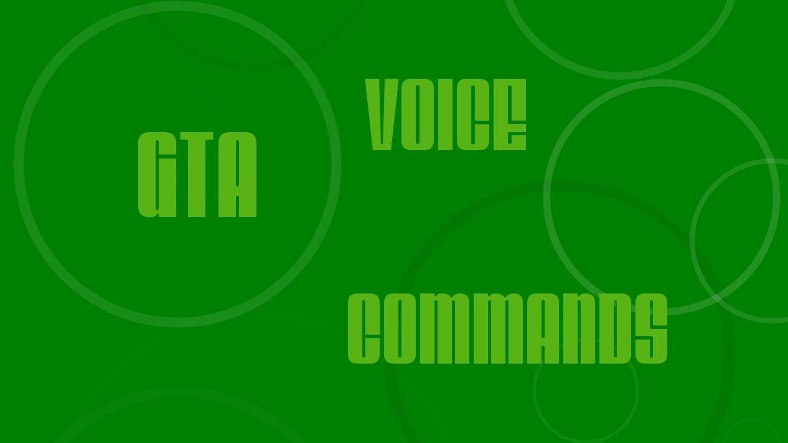

Image description
|
Image description
|
Image description
|
|
|
R2D2B2 and R2D2G2 are applications that work in conjuction with one another to create a new and
improved Hasbo R2D2 droid toy that I got when I was little. After ripping out the old internals
and replacing the main PCB with a Raspberry Pi 3B, my friend and I were able to rewire and
reprogram the three different motors of the unit to follow commands sent from the Pi. After that,
I wrote an Amazon Web Services Alexa Skill for an Amazon Echo Dot also placed inside the droid.
Using the Pi and Alexa Skill, users can interact with R2 via an Xbox Controller and some new and
improved voice commands!
|
Code Preview
using System;
using Windows.UI.Xaml;
using Windows.UI.Xaml.Controls;
using Windows.Devices.Gpio;
using System.Threading.Tasks;
using Windows.Gaming.Input;
using System.Collections.Generic;
using System.Reflection;
namespace R2D2G2
{
public sealed partial class MainPage : Page
{
GpioController gpioController;
DispatcherTimer timer;
IReadOnlyList<Gamepad> gamepads;
Gamepad gamepad;
Head head;
RightLeg rLeg;
LeftLeg lLeg;
public MainPage()
{
this.InitializeComponent();
timer = new DispatcherTimer();
timer.Interval = TimeSpan.FromMilliseconds(500);
timer.Tick += Timer_Tick;
InitGPIO();
InitMotors();
gamepads = Gamepad.Gamepads;
timer.Start();
}
private void InitMotors()
{
head = new Head(gpioController);
rLeg = new RightLeg(gpioController);
lLeg = new LeftLeg(gpioController);
}
private void InitGPIO()
{
if (GpioController.GetDefault() == null)
{
txbDebug.Text = "There is no GPIO controller on this device";
return;
}
gpioController = GpioController.GetDefault();
txbDebug.Text = $"GPIO pins ";
txbDebug.Text += "no longer initialize on startup (Is this gonna be too slow?)";
}
private void Timer_Tick(object sender, object e)
{
if (gamepads.Count > 0)
{
if (gamepads[0] != null)
{
gamepad = Gamepad.Gamepads[0];
}
var reading = gamepad.GetCurrentReading();
if (reading.Buttons == GamepadButtons.A)
{
lLeg.SetState(LeftLeg.States.Forwards);
}
if (reading.Buttons == GamepadButtons.B)
{
rLeg.SetState(RightLeg.States.Forwards);
}
}
}
}
}
{kind=link}